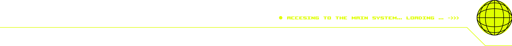

/ 우주 정거장 도면
/ 전체 도면
/ 출입 가능 구역
영화관, 우주정원, 의무실,
체력단련실, 조리실, 식량 저장소,
항공라운지, 우주호텔 비상연락실
/ 출입 가능 구역
산소공급실, 종교실, 에너지실
/ 1F
/ 출입 가능 구역
영화관
실시간으로 영화가 업로드 되는 홀로그램 영화관입니다.
우주정원
우주에서 유일하게 살아있는 식물을 볼 수 있는 곳입니다.
의무실
인공지능 AI 의사가 진찰해주는 우주 병원입니다.
/ 출입 제한 구역
산소공급실
당신의 생명을 책임져주는 공간입니다. 가끔씩 나오는
보라색 연기는 인체에 절대 무해하니 안심하시고
비상연락실로 가 지구 정거장 측에 알려주시기 바랍니다.
/ 2F
/ 출입 가능 구역
체력단련실
다양한 운동기구가 있는 헬스 케어 센터입니다.
조리실
기본적인 취식을 직접 해결할 수 있는 장소입니다.
식량 저장소
약 3년 간 생존할 수 있는 음식이 있는 곳입니다.
/ 출입 제한 구역
종교실
심란할 땐 숙소에서 기도 드리길 권장합니다.
기도하는 중간 누군가 당신의 뒤에 서 있는 것 같아도
절대로 눈을 뜨지 마십시오.
/ 3F
/ 출입 가능 구역
항공라운지
1년 뒤 도착할 우주선을 기다릴 수 있는 공간입니다.
우주호텔
조난객이 기본적으로 머물 수 있도록 준비된 장소입니다.
의무실
인공지능 AI 의사가 진찰해주는 우주 병원입니다.
/ 출입 제한 구역
에너지실
에너지는 언제나 공급됩니다.
정거장 전체 비상전력이이 끊겨도 에너지는
언제나 공급됩니다.